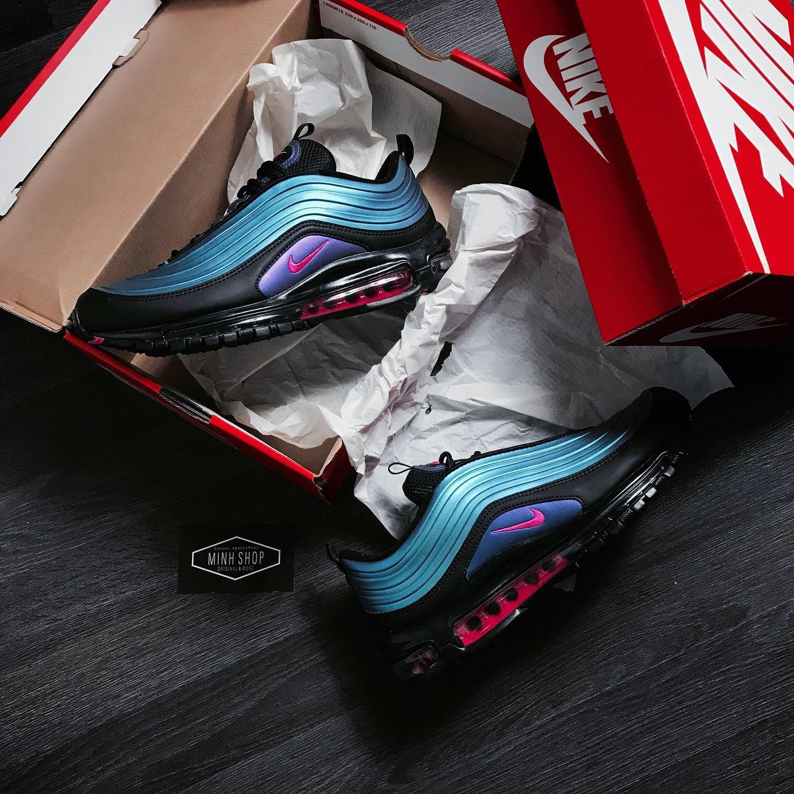
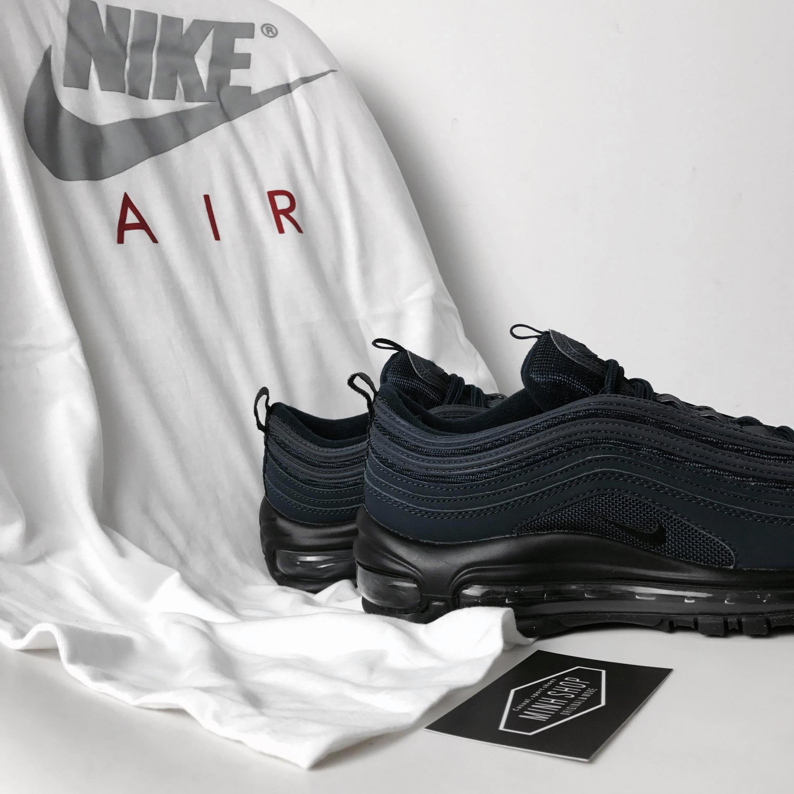
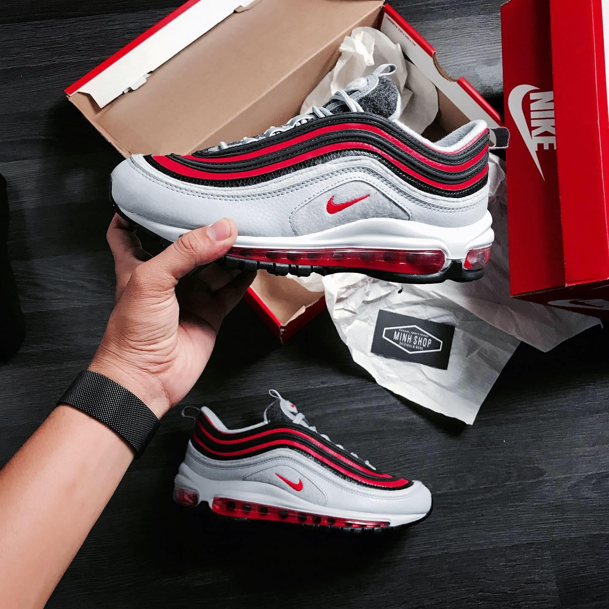
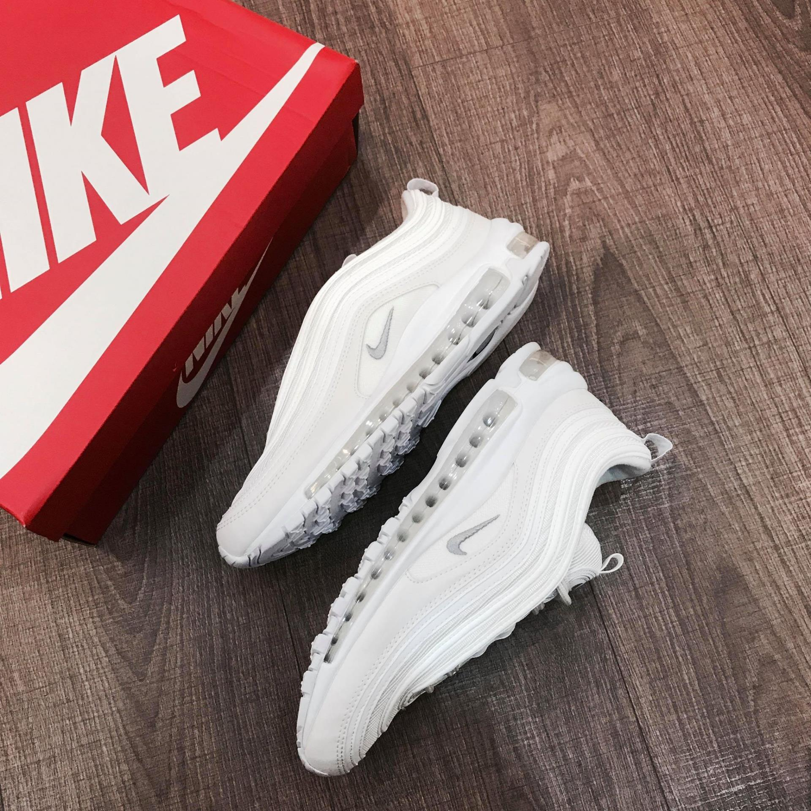
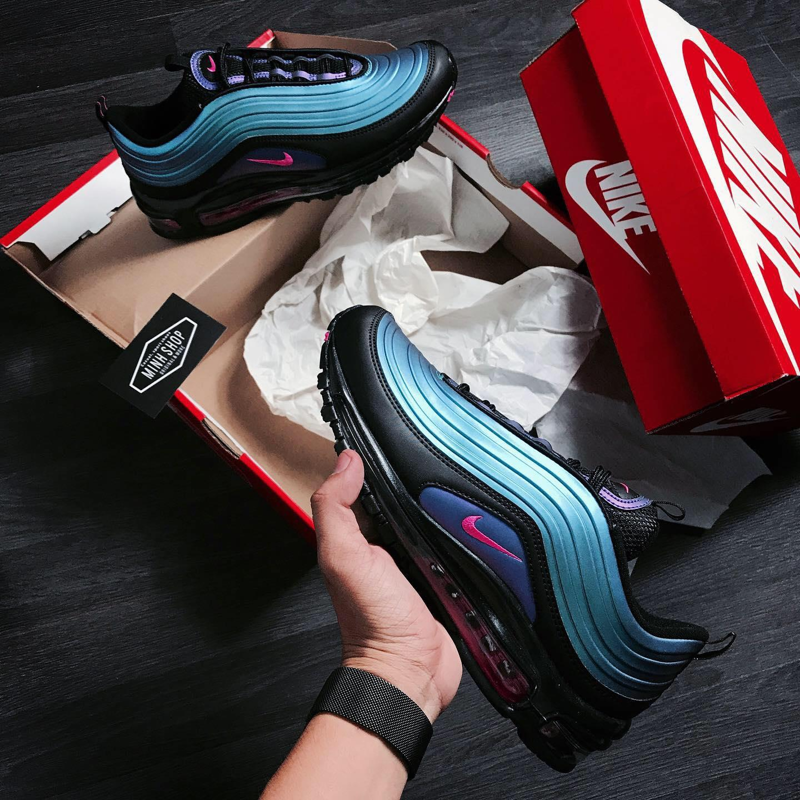
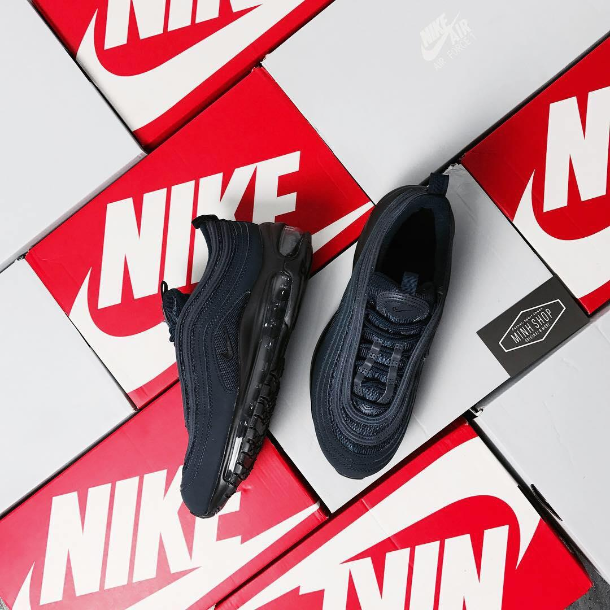
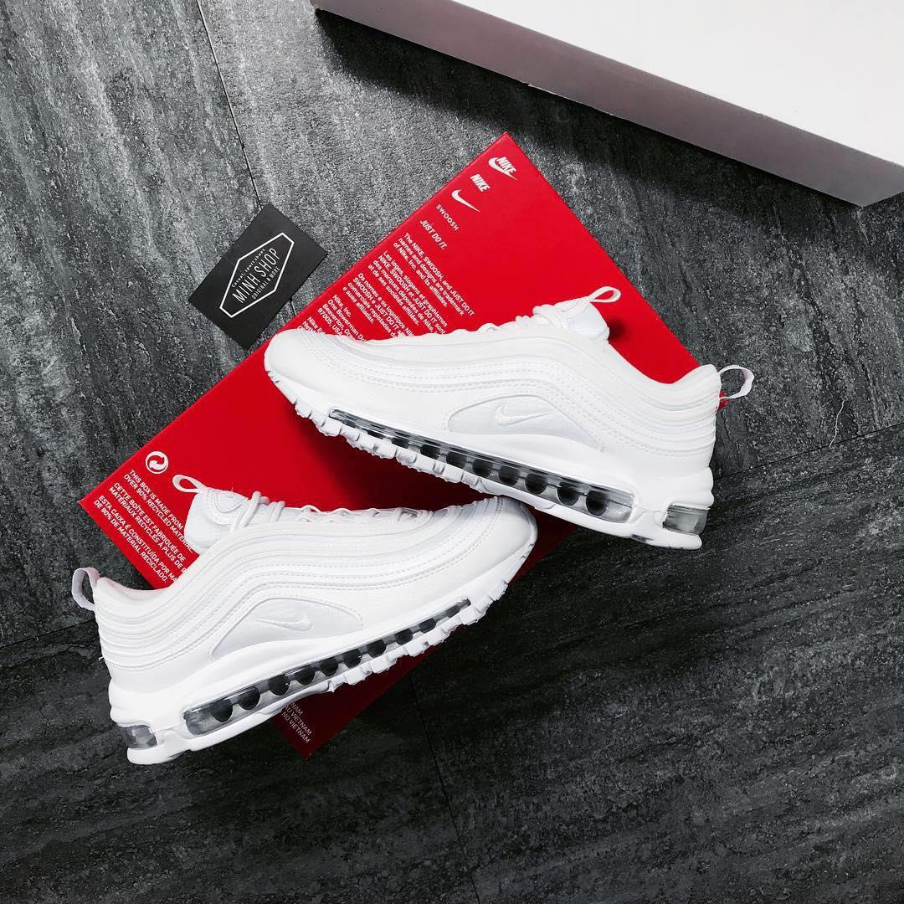

okay, phối màu rất phù hợp với mùa hè, vì sao ?, chả phải bây giờ là mùa hè và sự trở lại của các phối màu như orange (cam), neon (xanh) hay pink (hồng) đang dần trở lại sao ? sẽ rất phù hợp nếu như kết hợp giũa 1 chiếc quần denim hoặc jogger với graphic tee hoặc sơ mi lụa đầy màu sắc khi mix với airmax 97 phối màu này sao
bàn vậy là đủ rồi, hiệu năng nghen với mỗi phối màu chúng ta sẽ có từng loại vật liệu riêng biệt ở phần upper, có đôi màu xanh thì là chất liệu vải cực kỳ dầy
có đôi màu trắng thì nó lại cho cảm giác da, đôi đỏ thì nó lại cho cảm giác sợi bông
 điều đặc biệt ở đôi gradient thì nó lại cho cảm giác da nhám nhưng đưa ra ánh sáng mặt trời chiếu vào nó lại cho cảm giác hơi bóng 1 tí và ngả sang nhiều màu sắc khác nhau
điều đặc biệt với airmax 97 đó là với các đôi thường, 2 đường may trên thân giày sẽ là phản quan 3M, còn đối với đôi gradient thì sẽ phản quan ở nguyên phần upper thân trên luôn, hình thì mình để đây nha


ah mà quên nữa, vì để nói về lịch sử đôi giày này thì mình sẽ để dành ở 1 bài viết, cá nhân mình nghĩ rằng mỗi đôi giày đều luôn có câu chuyện phía sau nó, nhưng vì bài viết này đã dài rồi nên chắc mình sẽ hẹn lại ở một bài khác, các bạn thông cảm nghen tiếp theo đó là phần dây giày, đây là một trong số ít đôi giày được giấu đi phần xỏ dây, khi mà chúng ta sẽ khó thấy phần lỗ xỏ mà chỉ thấy phần dây di ngang qua, cảm giác từ trên cao nhìn xuống thì nó khá tối giản và hiện đại. Cá nhân mình, một người yêu thích công nghệ và sự đơn giản thì airmax 97 phiên bản 2019 cực kỳ hợp gout khi nó cũng vừa minimal và technology nữa
tiếp theo đó là bộ đệm air từ đầu đến gót giày, vào năm 1997 khi Nike tung ra mẫu giày này đã nhận được sự tung hô tán thưởng khi mà hãng lần đầu tiên đã đem bộ đệm air ở toàn bộ thân giày, sự tung hô này mãi cho đến năm 2013 khi người hàng xóm của Nike là adidas tung ra bộ đệm boost
về phần đế air, mình khuyến cáo rằng bộ đệm air này sẽ phù hợp với bóng rổ hoặc cardio, những môn thể thao dùng sức nhiều, các bước đẩy hoặc đạp xuống đất sẽ phản hồi lại lực tốt hơn so với bộ đệm boost, không có sản phẩm nào hoàn hảo, mỗi bộ đệm sinh ra là với một nhu cầu riêng biệt, ví dụ như với boost khi đi bộ hoặc chạy bền thì nó sẽ giúp bạn êm hơn với từng bước chân, với đế air nó lại khác, khi đế đạp đế air thì nó sẽ hoàn trả cho bạn một lực gần như tương tự, thân dưới của bạn ít tốn sức hơn, và nhiệm vụ gần như giao hoàn toàn cho thân trên.
ah mà có 1 phần nữa cũng khá quan trọng đó là phần đế air là lỗ tròn, nếu là lỗ vuông thì bạn nên cân nhắc nhé, vì hiện nay đôi giày này khá hot đấy, khả năng bị fake cũng khá là cao
về dòng sản phẩm thì airmax 97 chia ra làm 2 phân khúc là bản thường và ultra, phiên bản ultra thì sẽ nhẹ hơn bản thường tầm 30% và đang có rất nhiều phối màu tại minhshop
tới đây theo mình nghĩ là ok dòi, mình xin phép kết bài viết tại đây, feedback hoặc các bạn muốn mình viết về bài gì cứ ib vào fb của minhshop nhé, đế boost cũng khá khó để vệ sinh nên là chắc mình sẽ làm một bài viết hướng dẫn trong một vài ngày sắp tới, các bạn nhớ đón xem trong vài ngày sắp tới nghen, mình là Bai Cơ Nhỡ và rất cảm ơn các bạn đã đọc bài viết này. PEACE !